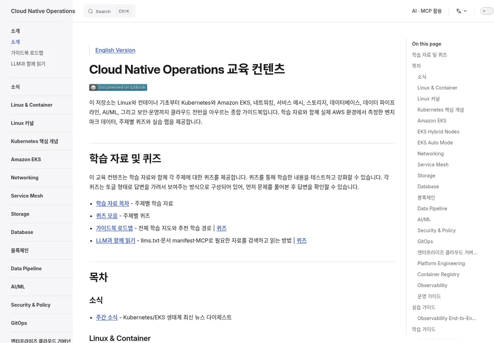
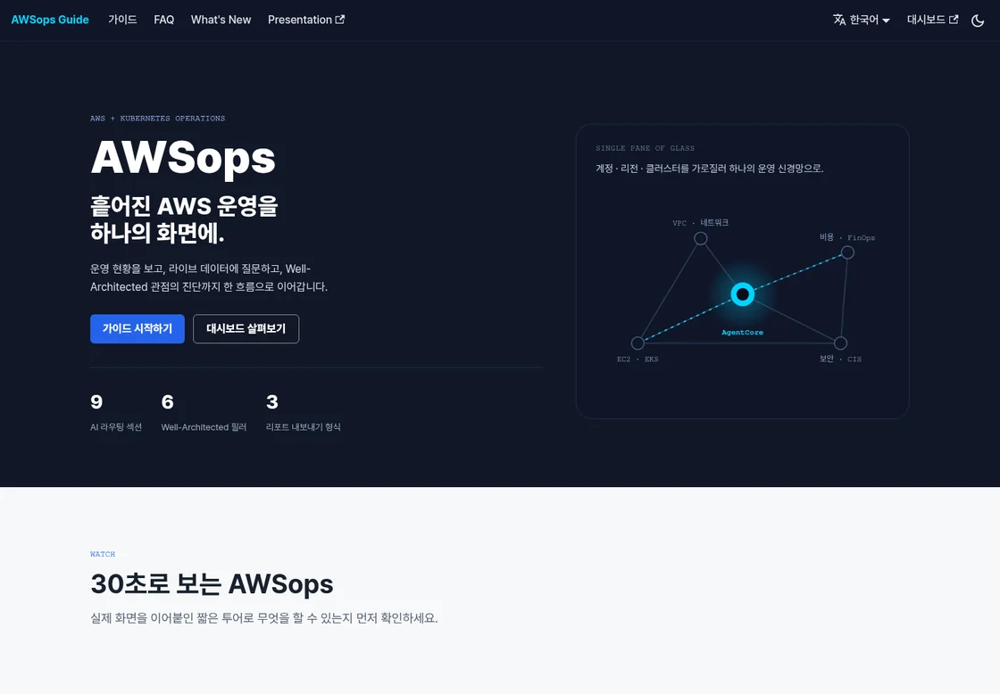

Cloud architect.Hands-on builder.
안녕하세요, 오준석입니다. Kubernetes와 AWS 운영에
집중하며,
실무에 쓸 수 있는 가이드, 도구, 벤치마크를
나눕니다.
오준석 · Oh Junseok
Sr. Solutions Architect @ AWS
Seoul, South Korea
Main projects
지금, 가장 집중하는 작업.
Kubernetes를 깊이 이해하는 문서와
AWS를 더 잘 운영하기 위한
도구를 다듬습니다.

AWS & Kubernetes Operations
awsops
AWS와 Kubernetes의 자원·비용·운영 지표를 한곳에서 살펴보고, AI 에이전트와 함께 인프라를 분석하는 운영 대시보드입니다. 실제 운영에 유용한 도구로 다듬고 있습니다.
whchoi98/awsops 기반 포크
Benchmark references
기술 선택을 위한 벤치마크.
인스턴스 성능과 모델의 품질·비용을 비교할 때
참고할 수 있는
공개 레퍼런스입니다.
Compute Performance
aws-ec2-benchmark
EC2와 Graviton의 컴퓨팅 성능, 웹 서버·캐시·애플리케이션 워크로드의 측정 결과를 비교하는 벤치마크입니다.
LLM Evaluation
llm-benchmark
금융 문서 번역의 품질·지연시간·추정 비용을 비교합니다. 언어 모델을 평가자로 활용한 평가 방법과 원본 결과를 함께 볼 수 있습니다.
More projects
전체 GitHub 리포지토리
더 살펴볼 프로젝트.
oh-my-cloud-skills
Developer ToolsClaude Code와 Codex에서 쓰는 클라우드 워크플로 모음. AWS 운영 진단, 콘텐츠 제작, 프로젝트 설정, 여러 AI의 협업을 재사용 가능한 스킬로 만듭니다.
inferplane
LLM Governance · Alpha모델 라우팅, 사용량 추적, 예산 정책을 다루는 LLM 거버넌스 프로젝트. 중앙 제어부와 로컬 실행부를 분리하는 구조를 개발하고 있습니다.
AgenticAI-Platform
AI Platform에이전트를 만드는 것에서 운영하는 것으로. AgentCore 기반 플랫폼 설계와 거버넌스를 가이드북으로 정리하고, 별도 데모로 구현을 탐구합니다.
multi-region-architecture
Architecture멀티 리전 쇼핑몰을 통해 고가용성, 장애 대응, GitOps 배포를 구현하는 Terraform·Kubernetes 레퍼런스.
cc-on-bedrock
Developer PlatformAmazon Bedrock 기반 Claude Code를 여러 사용자가 활용하도록 개발 환경, 인증, 사용량과 예산 관리를 함께 제공하는 플랫폼.
claude-code-usage-dashboard
ObservabilityOpenTelemetry와 ClickHouse로 Claude Code 사용량을 수집하고, 비용과 도입 현황을 시각화하는 대시보드.
ttobak
AI Assistant한국어 회의의 실시간 자막, 화자 구분 전사, 편집 가능한 회의록을 연결하는 AI 회의 도우미.
security-ops
Security Research코드의 보안 문제 후보를 찾고, 반론 검토와 재검증을 거쳐 결과를 정리하는 다단계 AI 보안 분석 실험.
AWS-Demo-Platform
Demo Operations여러 AWS 계정의 데모 프로젝트를 찾고, 실행·중지와 작업 이력을 관리하는 비프로덕션 환경 관리 플랫폼.
kiro-dashboard
ObservabilityKiro 활동 리포트의 사용량·크레딧·모델 선택을 시각화하고, 자연어 질문으로 분석하는 대시보드.
eks-workshop
WorkshopEKS의 기본 운영부터 Auto Mode까지. 공식 워크숍의 핵심 모듈을 한국어 학습자에 맞춘 실습 가이드.
claude-code-workshop
WorkshopClaude Code의 개발 흐름과 활용 패턴을 실습으로 익히는 딥다이브 커리큘럼과 학습 자료.
claude-code-workshop-skills
Plugins워크숍에서 바로 실습할 수 있는 플러그인 모음. 여러 AI의 협업과 작업 위임을 개발 과정에 연결합니다.
reactive_presentation
Creative Tools인터랙티브 슬라이드와 시각적 설명을 웹에서 구성하는 프레젠테이션 프레임워크.
About me
설계에서 운영까지.
설계에서 운영까지.
경험을 코드로 연결합니다.
삼성전자의 소프트웨어 개발, 쿠팡·매스프레소·요기요의 서비스 운영을 거쳐, 지금은 AWS에서 고객의 클라우드 아키텍처 설계를 돕고 있습니다.
관심의 중심에는 늘 ‘실제로 잘 동작하는 시스템’이 있습니다. Kubernetes와 멀티 리전 아키텍처에서 쌓은 경험을 AI 에이전트, 모델 평가, 개발 도구로 확장하고 있습니다.
오준석 · Oh JunseokLinkedIn에서 더 알아보기
경력
-
Amazon Web Services
Sr. Solutions Architect
클라우드 네이티브 아키텍처 설계와 고객 기술 지원. EKS, 컨테이너, 코드로 관리하는 인프라(IaC).
-
Yogiyo
—DevOps / Principal Engineer
Multi-EKS 운영, Active-Active 아키텍처, Karpenter, Istio, ACK 기반 인프라 관리.
-
Mathpresso · QANDA
—DevOps Engineer
Kubernetes 운영, CI/CD 파이프라인, 인프라 자동화와 모니터링.
-
Coupang
—Principal Engineer
대규모 마이크로서비스 운영, 서비스 안정성, 배포 자동화.
-
Samsung Electronics
—Staff Engineer
임베디드 소프트웨어 개발과 시스템 아키텍처 설계.
AI & Agents
Amazon Bedrock · AgentCore · LLM Evaluation
Claude Code ·
Codex
MCP · AI와 외부 도구를 연결하는 프로토콜
Cloud & Platform
AWS · GCP · Kubernetes · EKS
Karpenter · Istio · Multi-Region
Engineering & Operations
Terraform · ACK · Argo CD · GitHub Actions
Python · Go ·
TypeScript · Observability
Writing & talks
배운 것은, 함께 나눕니다.
현장에서 얻은 경험을 발표와 글로 정리합니다.
-
기술 기고
엔터프라이즈 Multi-EKS: GitOps 기반 Blue-Green 무중단 운영 전략
AWS 기술 블로그
오준석 기고 -
기술 기고
AWS Step Functions로 구현하는 Aurora 읽기 복제본 캐시 워밍 자동화
AWS 기술 블로그
오준석 공동 기고 -
발표 이력 · 2024
EKS 환경에서 Karpenter 활용하기
AWS Summit Seoul -
발표 이력 · 2025
우리은행 BaaS 플랫폼과 Control Tower
AI x Industry Week
BaaS · 서비스형 은행 -
Guidebook
Kubernetes와 Amazon EKS 운영 가이드북
kubernetes-docs
코드 밖의 기록도 있습니다. 일상과 여행에서 만난 장면들을 사진으로 남깁니다.
사진 블로그다음 이야기도,
함께 만들어 가요.
클라우드, AI, 그리고 더 나은 개발 경험에 관한 대화를 환영합니다.